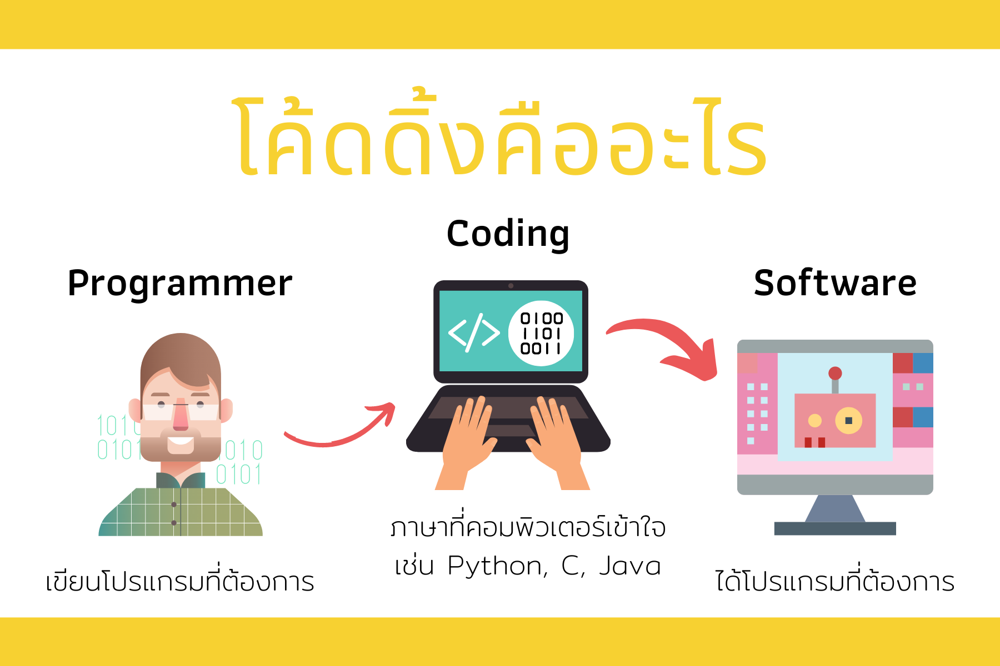

โค้ดดิ้ง (Coding) คือการป้อนคำสั่งด้วยภาษาคอมพิวเตอร์ต่างๆ เพื่อให้คอมพิวเตอร์ทำงานตามที่ต้องการ เมื่อโค้ดดิ้งเสร็จแล้ว เราจะนำโค้ดที่ได้ไปทดสอบ และประมวลผลดูว่าโปรแกรมได้ทำงานตามคำสั่งหรือไม่ เพื่อนำโปรแกรมไปใช้งานต่อไป
โปรแกรมคอมพิวเตอร์ (Computer Programming) คือ ชุดคำสั่งที่สั่งให้คอมพิวเตอร์สามารถทำงานได้ตรงตามความต้องการและความถูกต้อง เช่น โปรแกรมคอมพิวเตอร์สำหรับสั่งให้คอมพิวเตอร์พิมพ์เอกสาร โปรแกรมสำหรับวาดภาพ เป็นต้น
การเขียนโปรแกรม (Programming) คือ การเขียนชุดคำสั่งด้วยภาษาโปรแกรมที่สั่งให้คอมพิวเตอร์สามารถทำงานได้ตรงตามความต้องการ และสามารถทำงานได้อย่างถูกต้อง ซึ่งเป็นการกำหนดขั้นตอนให้กับคอมพิวเตอร์ทำงานตามลำดับและรูปแบบที่กำหนดไว้
